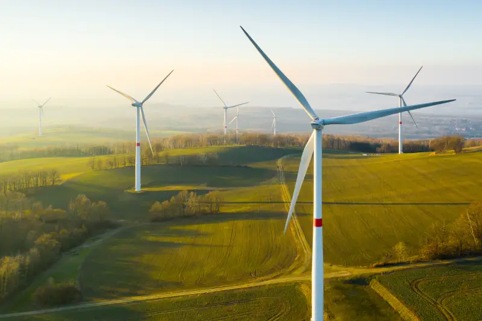

Science Exhibition Project
Wind energy is one of the most important sources of renewable energy in the world today. Our windmill project helps us understand how natural resources like wind can be used to produce useful energy without causing pollution.
Wind energy is clean, renewable, and eco-friendly. Unlike fossil fuels, wind energy does not produce harmful gases or pollution. A windmill uses the natural power of wind to rotate its blades and generate electricity.

The windmill model works on the principle of energy conversion. It converts wind energy into mechanical energy and then into electrical energy.
When wind blows, it strikes the blades of the windmill and makes them rotate. The rotating blades turn the shaft connected to a motor or generator. The motor converts this movement into electrical energy which can glow an LED bulb.
Windmills are widely used to generate electricity from wind energy. Large wind turbines are installed in wind farms and supply electricity to homes, schools, hospitals, and industries.
Wind energy is also useful in remote areas where electricity supply is difficult. It can be used for pumping water and powering small devices.
We would like to express our sincere gratitude to our teacher for guiding us throughout this Windmill Project.
This project helped us understand the importance of renewable energy and electricity generation using wind energy.
We are also thankful to our school and team members for their support and cooperation in completing this project successfully.